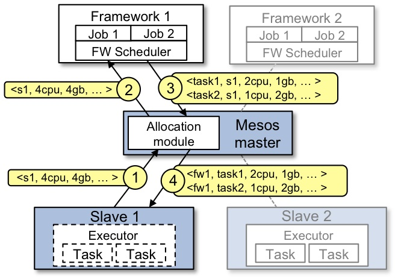

Created by Łukasz Adamczyk / @lukaszvadamczyk
What is Mesos?
- Open Source Apache project
- Cluster Resource Manager
- Scalable to 10,000s of nodes
- Distributed systems SDK
Why use Mesos?
Source: http://mesosphere.github.io/presentations/mesos-nutshell-2015/
Glossary
- Master
coordinates whole cluster - Slave/Agent
runs on every node in cluster - Resource Offer
available resources which Slave/Agent offers to the Master - Task
unit of work scheduled by framework and executed on Slave/Agent - Framework
runs on top of Mesos, includes both a Scheduler and Executors
Source: http://cloudarchitectmusings.com/2015/03/26/digging-deeper-into-apache-mesos/
 Source: http://mesos.apache.org/documentation/